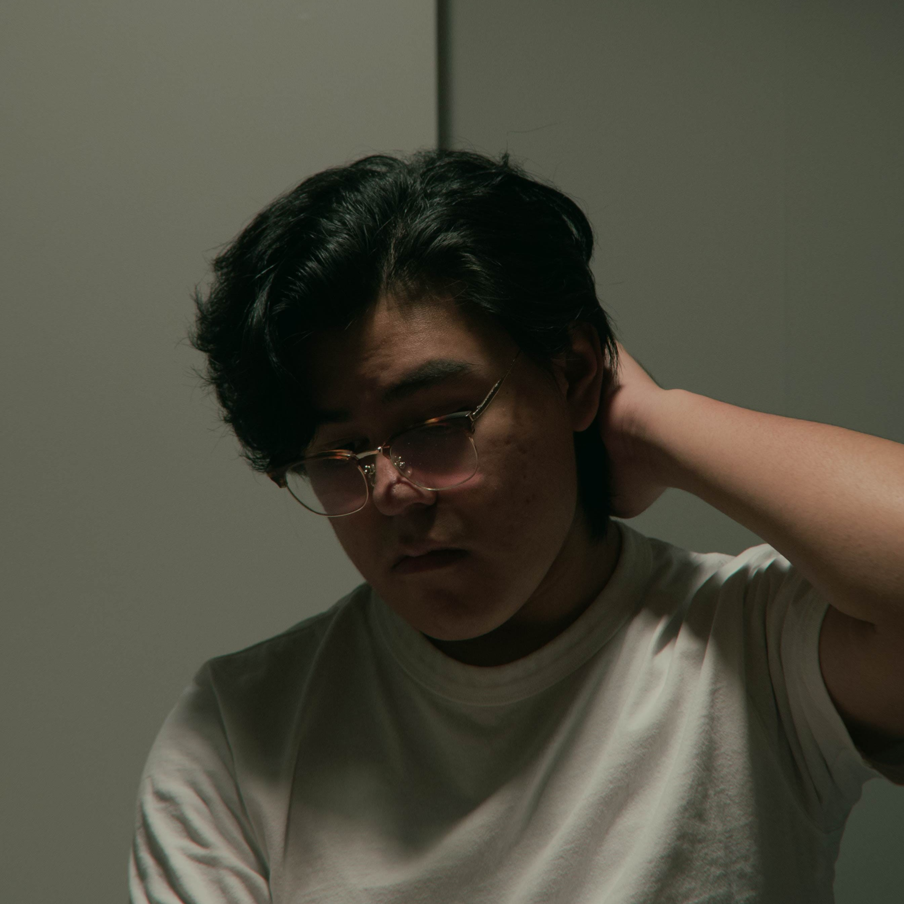

Hi, I’m Gabe
I'm a newly graduated student from New York University where I received a BFA in Film and Television Production.
I have a deep passion for art, with a particular interest in surrealism in film and animation. I believe visual effects and 3D animation still have so much more potential to be used to push the medium to new artistic heights and ideas and I intend to be someone who adds to this progression of art.
Currently I specialize in After Effects compositing, but also have skills in video/photo editing, motion graphics, audio editing, audio tech, photo and videography, zBrush sculpting, and I’m currently learning Blender.
Feel free to reach out to me on the socials page.
